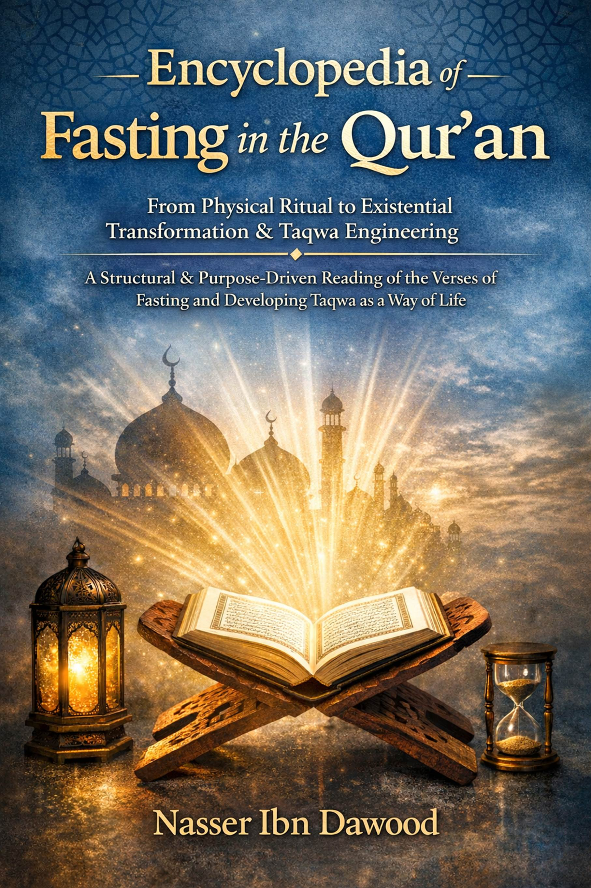

This is a condensed conceptual adaptation of your work, "The Fasting Series"), designed for the global academic and research community.I. The Global
Knowledge Manifesto Knowledge is a universal right. The author firmly believes
that wisdom should not be locked behind paywalls or language barriers.
Global Access Policy: All books in this library are available for
free in multiple digital formats (PDF, HTML, DOCX, TXT).
The Digital Library: As of early 2026, the collection hosts 68
volumes (34 in Arabic and 34 in English), fully optimized for AI-assisted
research and digital archiving.
Official Platforms: * Main Website: nasserhabitat.github.io/nasser-books/
II. Translator’s Note: The Bridge of Meaning
This English edition is a condensed conceptual adaptation. It is not a
word-for-word translation, but rather an "extraction of essence." It
presents the core philosophical framework in accessible English, omitting the
exhaustive linguistic debates and classical references found in the original
Arabic text.
For the academic researcher: The original Arabic version remains the
primary source for comprehensive linguistic analysis, detailed exegesis
(Tafsir), and the complete bibliography.
From Physical Ritual to Existential Method and
the Architecture of Taqwa
Encyclopedia of Qur’anic Fasting
From Ritual Practice to Existential Method: A Structural and Maqasid-Based Reading of the Fasting Verses and the
Construction of Taqwa as a Way of Life
Encyclopedia of Qur’anic Fasting
From Ritual to Existential Transformation
A Conceptual Translation
Chapter 1: The Paradigm Shift: Ritual vs.
Methodology
The common understanding of fasting (Siyam)
is often reduced to the physical act of abstaining from food, drink, and
intimate relations from dawn to sunset. While jurisprudentially correct, this
reductionist view transforms a profound act of worship into a repetitive,
spiritless ritual. This book proposes a shift in perspective: viewing Siyam
not as mere physical deprivation, but as a comprehensive intellectual and
spiritual methodology (Manhaj) designed to
elevate human consciousness.
The ultimate goal of Siyam
is the attainment of Taqwa (Conscious Awareness/God-consciousness). This
state is not achieved through physical hunger alone, but through a deliberate
process of "Tadabbur" (deep Quranic
reflection) and "Tazkiyah" (self-purification).
Chapter 2: The Semantics of Restraint: Sawm
vs. Siyam
A critical linguistic distinction is made
between the Quranic terms Sawm and Siyam:
Chapter 3: Re-coding the Quranic Lexicon
The methodology of this work involves a
"re-reading" of key terms within the Quranic verses of fasting
(Al-Baqarah: 183-187):
Chapter 4: Intellectual Solidarity (Scientific
Takaful)
The concept of "feeding the poor" (Fidya) is expanded into the realm of knowledge.
Chapter 5: Proclaiming the Truth: Ramadan and
the Quran
Conclusion: The Journey to Al-Furqan
By embracing Siyam as an intellectual
methodology, the believer moves from "Physical Ritualism" to
"Cognitive Satiation". This journey transforms the month of Ramadan
into a global workshop for reflection, where the ultimate reward is the Furqan—the
ability to distinguish between truth and falsehood through the light of the
Quran.
I.
The Global Knowledge Manifesto
Knowledge
is a universal right. The
author firmly believes that wisdom should not be locked behind paywalls or
language barriers.
II.
Translator’s Note: The Bridge of Meaning
This
English edition is a condensed conceptual adaptation. It is not a word-for-word
translation, but rather an "extraction
of essence." It
presents the core philosophical framework in accessible English, omitting the
exhaustive linguistic debates and classical references found in the original
Arabic text.
For
the academic researcher: The
original Arabic version remains the primary source for comprehensive linguistic
analysis, detailed exegesis (Tafsir), and the complete bibliography.
The
Siyam Series: From "Physical Ritual" to "Comprehensive Cognitive
Methodology"
1. المرتكز
المنهجي: الصيام كعملية تحرير للعقل
1. The
Methodological Anchor: Fasting as a Process of Cognitive Liberation
In
English: The
ultimate goal of fasting in this work is not physical
deprivation, but the liberation of the mind from inherited
"programming." Fasting is a "System Reset" for the internal
self, where abstinence evolves from a negative act (quitting food) to a positive
act (installing an internal valve) to filter information and ideas.
2. The
Duality of Sawm and Siyam: A Linguistic Distinction
In
English: The
book distinguishes between Sawm as a situational abstinence from a specific act (like
Mary’s vow of silence) and Siyam as a sustainable life methodology. Siyam is
the mind's silence from speaking about the Divine Word without knowledge and
the restraint from following "Stray Mountains" (rigid, unverified
traditions).
3. Installing
the "Internal Valve" and Deconstructing "Stray Mountains"
In
English: The
author introduces the concept of "Stray Mountains"—false cognitive
accumulations and mental idols that block the vision of truth. True fasting
requires activating the "Internal Valve," which prevents the spirit
and heart from being fed with intellectual toxins (envy, malice, tribalism),
allowing for "Cognitive Satiation" from the Quranic source.
4. Collective
Tadabbur: Toward a "Cumulative Collective Mind"
In
English: The
book shifts from "Individual Reflection" to "Open Collective Tadabbur." Ramadan is viewed as a "Universal
Laboratory" where believers gather to study verses (cumulatively) without
monopolizing the truth. Authority belongs to the text alone, and minds
intersect to reveal the Furqan—the ability to
distinguish between truth and falsehood in our contemporary reality.
5. Re-interpreting
"The Balance" and "Cognitive Adultery"
In
English: The
book expands the concept of Al-Mizan (The Balance)
to include professional excellence and justice in relationships. It also
presents a bold interpretation of "Adultery" (Zina) in its broader sense: the disruption of the balance in
any relationship (fraud, falsification, exploitation), asserting that Siyam is
the guardian that prevents this imbalance.
6. Conclusion:
Elevating to the Level of "Glorifying Allah"
In
English: The
end of the fasting journey in this book is not merely the joy of Eid at the end
of deprivation, but the "Magnification of Allah" (Takbir). This means Allah becomes greater in our consciousness
than all internal idols and fears. It is the transition from "Ritual"
to "Methodology" and from "Hunger" to "Sovereignty."